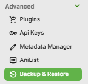
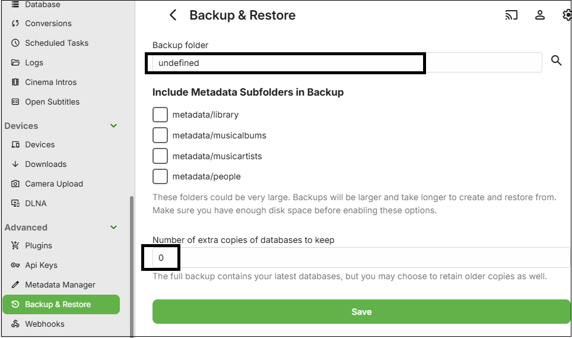
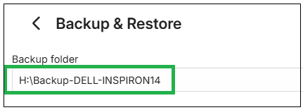
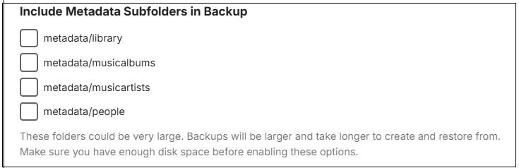
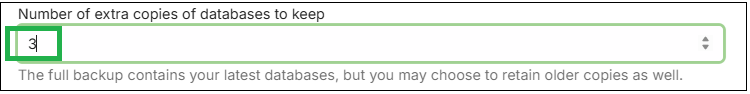
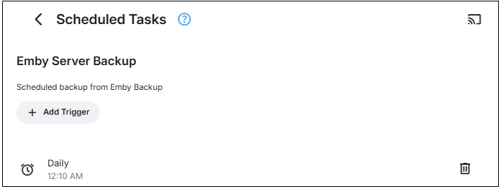
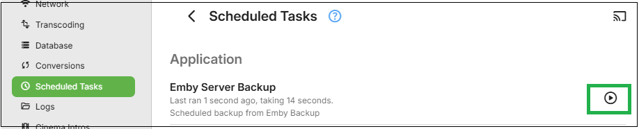

Backing Up Emby Server
We recommend using the Backup & Restore plugin, which is designed to make this process really painless by doing the work for you. This plugin requires Emby Premiere and can be found in our plugin catalog.
The Backup & Restore plugin can help you backup and restore the following:
- Server configuration
- Users
- User data: play-states & favorites
- Plugin settings
- Playlists
- Live TV Schedule
This will not backup library contents. For metadata, there are options to include all metadata in the backups. You can configure your libraries to save nfo and image files alongside the media within the media folders and they would then be included in your own library media content backups.
Note
If you have configured camera uploads and/or Live TV recordings, the default directories for these (data\camerauploads and data\livetv\recordings) are not part of the backup. You would need to back these up yourself and re-instate on the target new location.
Note
When migrating to a new machine, media paths will need to remain the same as on the original server. The libraries top level folders can be different on the new machine. File Path separator / or \ will need to be the same on both systems. This means Windows to Windows and Linux/NAS/Mac to Linux/NAS/Mac.
Important
Backups created on older versions of Emby Server (4.7 and earlier) are not compatible and cannot be restored into Emby Server 4.8 or later.
How to use the Backup & Restore Plugin
Be sure your Emby Premiere key is properly installed and validated. Backup & Restore requires Emby Premiere .
Make sure there are no pending updates to the plugin, requiring a server restart to be applied. Restart the Emby Server to apply the updates if the server dashboard indicates that.
Launch Backup & Restore from within the Emby Server Advanced settings sidebar.

Configure the Backup plugin by setting a folder to save the backups within.
Initially the backup folder path will be undefined. No backups will take place until this path is defined.
The default backup will backup some of the metadata sub-folders and others will be left to you to decide if they should be included. For the database backup, the default is to have one set of backups.

Important
You must set a path for backups by changing the default "undefined" path setting to an actual path and saving that for the backups to start. Please ensure that the system user account that Emby Server runs in, has full permissions to this backups path. Paths must be absolute and not relative.
Enter a path for the backups, e.g.:

Decide if you want to backup all metadata. If you do include the additional metadata sub-folders in the backup, make sure there is sufficient disk space for the backups. Backups will take much longer to run, specifically for the first backup.

If you wish to migrate the server to a new system, it is advised to create a backup that has all the possible metadata that can be backed up. Tick all 4 metadata options and save the changes.
If you wish to keep additional backups of the database files, you can specify that. By default, only one backup set of the databases is produced.

Now click "Save".
Note
If running Emby Server on Windows as a Windows Service, the backup path needs to be to a local drive or using UNC path if it is an external shared network drive. This is because Mapped Network Drives would not be available to a Windows Service. e.g. Use \\server-name\share-name\backups-folder-name as path and not a mapped network drive.
By default, the backup process will run once a day soon after midnight. This can be changed in Scheduled Tasks settings.

In Scheduled Tasks, you can manually run the schedule for "Emby Server Backup" after backups setup, if you wish to confirm that the backups succeed, rather than wait for the scheduled task to run later on.

Note
Keep a record of what plugins you add to the Emby Server, as whilst the backup operation does save the configurations of all installed plugins, any added plugins will need to be manually installed after the restore of the server. Some plugins may have database files. These are not included in the Emby Server backups. The Plugins should only be added to the new server after you have confirmed that the restored Emby Server is operational.